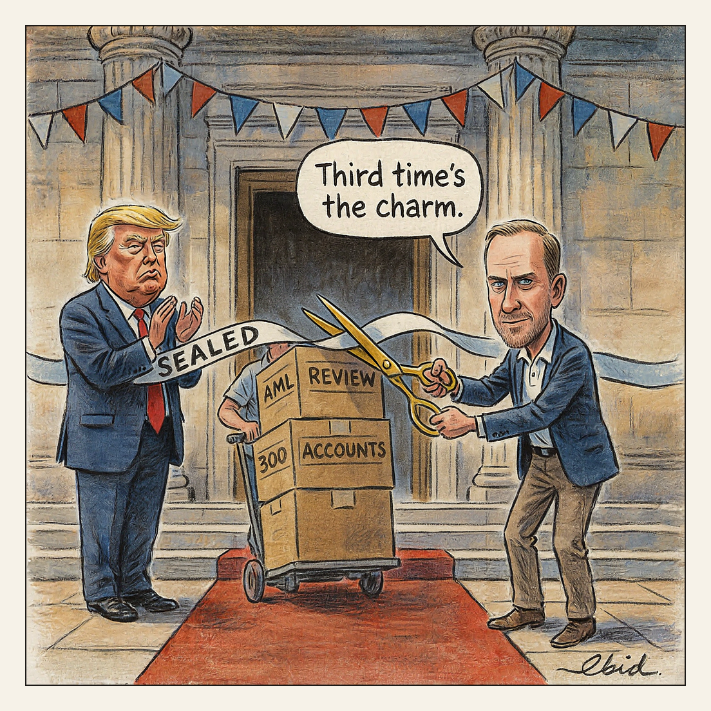

Capital One declines to comment.
Grand Opening

In a court filing, Capital One states it closed more than 300 Trump Organization accounts in 2021 following a review by its anti-money-laundering team. The Trump Organization and Eric Trump sued in Florida federal court in March 2025, alleging political retaliation after January 6; two complaints were dismissed, and the amended version now on file is the third attempt. The bank argues federal confidentiality rules covering suspicious-activity reporting prohibit it from explaining the closures to the customer.